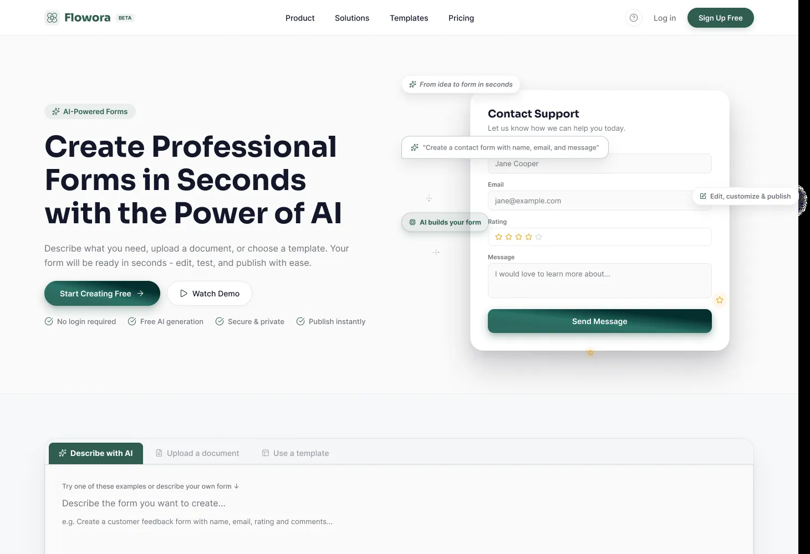
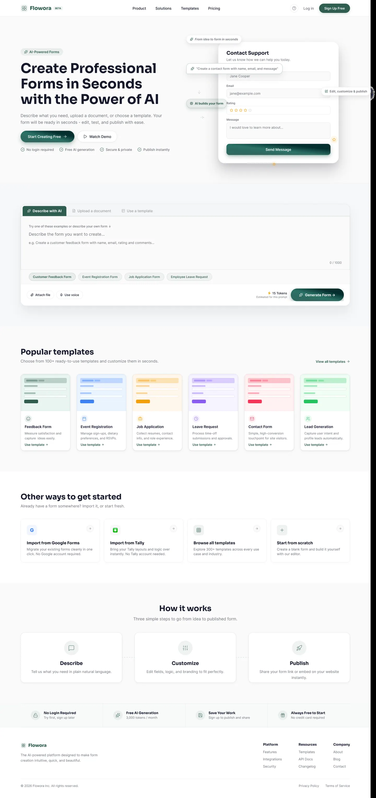
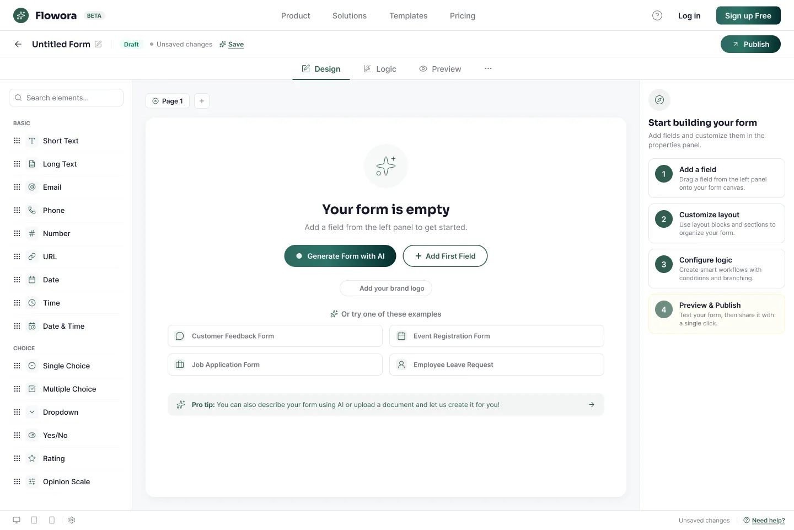

FloworaAI form builder SaaS
Create professional forms in seconds, with AI. - AI form builder SaaS UI/UX case study
Describe a form in plain words and get a ready-to-edit form, with templates and a clean builder for the rest.

01Overview
Describe a form in plain words and get a ready-to-edit form, with templates and a clean builder for the rest.
Flowora is an AI form builder: users describe the form they need, upload a document or start from a template, and get an editable form instantly. I designed the marketing homepage with a live prompt box, the template gallery and the form builder workspace.
02The challenge
What had to be solved
Form builders are either simple and limited or powerful and overwhelming. AI can remove the blank page, but users still need full control afterwards.
Design goals
- Let people try the AI from the homepage
- Offer three ways to start
- Keep the builder calm with many field types
- Guide first-time users through their first form
03Process
How I approached it
- Prompt on the homepageThe hero includes a working prompt box with example prompts.
- Templates as cardsColour-coded templates for feedback, events, jobs, leads and more.
- Three-panel builderFields on the left, canvas in the middle, guidance on the right.
- Empty state that teachesThe empty form offers AI generation, templates and examples.
04Homepage
Try the AI before signing up.
A clear headline, a prompt box with suggestions, popular templates and other ways to get started.

05Form builder
A calm workspace for any form.
A field library, a focused canvas with design, logic and preview tabs, and a step-by-step guide for new users.

06Decisions
Key design decisions
A live form preview next to the headline makes the promise concrete.
A deep green accent feels trustworthy and quiet, suiting a tool people use for long sessions.
Instead of a tour, the empty form itself offers the next actions.
07Design system
Visual language
Deep green with soft neutrals, colour-coded template cards and a clean sans-serif UI.
TypeClean geometric sans-serif
08Outcome
What was delivered
Flowora gets a homepage that lets visitors try the AI immediately and a builder that stays calm with powerful tools.
If the project continues, next I would:
- Design conditional logic editor
- Add response analytics
- Design integrations page
Next project
HOK BeautyBeauty without borders.View project